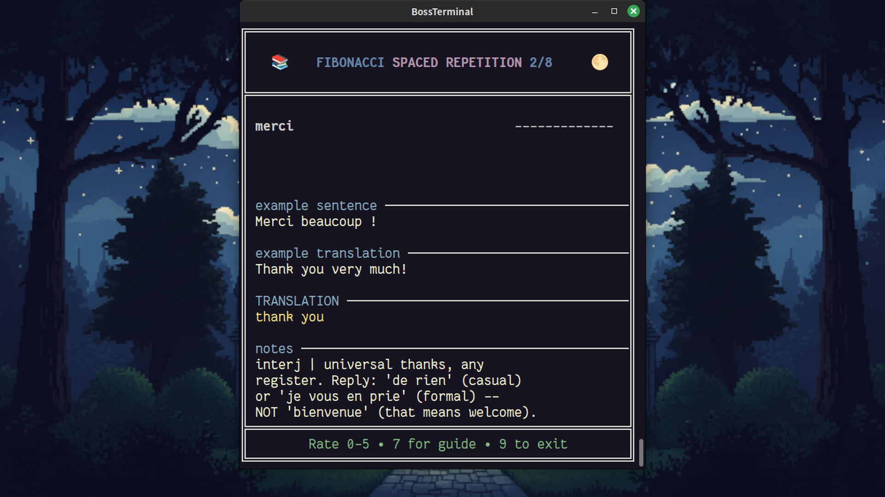

Ya en Steam · 1.000 palabras · 40 clusters · 20 lecciones
Français
El desconocido cortés se vuelve tu amigo.
Escuchar · Leer · Repetir · Calificar · Luchar
Empiezas a distancia prudente — Bonjour, comment allez-vous ? Mil palabras después alguien te dice on peut se tutoyer, y el registro entero cambia. Francés metropolitano, elegido por la frecuencia con la que de verdad te lo vas a encontrar. Y todo el curso, en español.
Totalmente jugable en español
Las 1.000 cartas llevan su traducción y sus notas en español. Las 20 lecciones de referencia tienen su versión en español. Y la interfaz del juego habla español. Eliges tu idioma una vez y el paquete entero te sigue.
Así se ve la carta con el español elegido como idioma de apoyo: el francés arriba, y debajo la traducción, la frase de ejemplo y las notas gramaticales en tu idioma. Nada queda en inglés.
De vous a tu
Bonne continuation — sigue adelante.
French Core es un solo camino de entrada, recorrido en cinco etapas. Empiezas donde empieza todo el mundo: los saludos, las personas que tienes delante, el cuerpo, los primeros verbos, la comida, los números, la hora. Luego el día se ensancha — levantarte, la ciudad, el mercado, el calendario, la gente más cercana. Para la quinta etapa ya lees sobre trámites y leyes, medios, vida digital, celebraciones y los matices finos de adjetivo que separan joli de magnifique.
Cada palabra salió de datos de frecuencia de corpus de subtítulos — el francés que de verdad te llega al oído en el cine, la televisión y la conversación, ponderado hacia lo que más importa para la comprensión. La gramática entra etapa tras etapa, y las frases de ejemplo se mantienen dentro de lo que ya aprendiste, así que nada en una carta se adelanta. Cuando termines Core habrás leído más de 7.000 palabras de francés en contexto.
Primer contacto, la familia, el cuerpo, los verbos básicos, la comida, contar, la hora.
Levantarte, por la ciudad, el mercado, el calendario, los vínculos cercanos, la vida diaria.
Arreglarte, la casa, el clima, tiendas y dinero, los estados de ánimo, y el pasado.
Trabajo, viajes, la escuela, el mundo salvaje, mente y opinión, el carácter.
Trámites y leyes, medios y artes, vida digital, celebraciones, ideas grandes, matices finos.
Cinco etapas, cuarenta clusters
Cada cluster son 25 cartas y termina en un boss fight. No se esconde nada — la lista completa está en la página de vocabulario, gratis para leerla antes de comprar.
5 etapas · 40 clusters · 1.000 cartas20 lecciones de referenciaBase A1–A2
Cada vez más exigente
Las frases de ejemplo se vuelven más complejas etapa a etapa — y nunca usan gramática que no hayas visto.
- J'ai deux frères et une sœur.Tengo dos hermanos y una hermana.
- Le week-end je cours, mais le matin je marche.Los fines de semana corro, pero en la mañana camino.
- Elle couche son fils chaque soir à huit heures.Ella acuesta a su hijo cada noche a las ocho.
- Il pleuvait beaucoup ; ainsi, nous sommes restés à la maison.Llovía mucho; así que nos quedamos en casa.
- Pourriez-vous m'expliquer pourquoi vous êtes encore en retard aujourd'hui ?¿Podría explicarme por qué llegó tarde otra vez hoy? (formal)
le · la, en color
Cada sustantivo lleva su artículo codificado por color según el género, para que aprendas el género con la palabra y no después. Toca una carta para girarla.
La élision es donde la mayoría pierde el género: delante de un sonido vocálico, le y la se colapsan los dos en l', y la pista desaparece. FlashBoss mantiene el color debajo del apóstrofo, así que l'ami se lee masculino y l'eau femenino de un vistazo. Las palabras con h aspirada que se niegan a elidir — le héros, la honte — tienen su propia lección.
Veinte lecciones, en secuencia
Cada lección de referencia se desbloquea en la carta exacta donde la necesitas por primera vez, y se queda disponible después. Las veinte están en español y son gratis de leer en la página de lecciones.
- 01Pronunciación francesaLas vocales, las nasales, las finales mudas y las consonantes CaReFuL que sí sobreviven al final de palabra.
- 03Tu vs vousA quién le toca cada uno, por qué vous siempre es la apertura segura, y qué significa que alguien te ofrezca on peut se tutoyer.
- 06Il y a y la horaLas dos estructuras que necesitas antes de poder quedar con nadie.
- 08Liaison y élisionPor qué l'hôtel pierde la vocal y aux hôtels gana una [z].
- 12Palabras con h-aspiréLa lista corta y cerrada donde la h muda todavía bloquea la élision: la honte, nunca l'honte.
- 13¿Avoir o être?Qué auxiliar lleva el passé composé, y los verbos que insisten en être.
- 14Est — un homógrafoUna grafía, dos palabras, dos pronunciaciones: il est [ɛ] frente a l'est [ɛst].
- 17Intro al subjonctifEl modo que el inglés perdió, presentado justo donde las cartas empiezan a necesitarlo.
También dentro: leer una tarjeta, el presente, la negación, el impératif, el futur proche, el passé composé, los verbos reflexivos, el imparfait, el conditionnel présent, el futur simple, héros frente a héroïne, y una lección de cierre sobre a dónde ir después.
Las palabras que se parecen a las tuyas
El francés comparte miles de palabras con el español y con el inglés — y unas cuantas te están mintiendo. Las cartas lo dicen. Toca para girar.
El principio de Pareto
3 paquetes. El 10 % del vocabulario francés para el 90 % de los usos. Core ya salió; los otros dos llegan en secuencia.
Del primer contacto a la pertenencia, en cinco etapas, con veinte lecciones de referencia. El camino de entrada.
ya disponibleLas siguientes mil — el francés cotidiano a velocidad real, y el registro hablado informal. Requiere Core.
llega en secuenciaEl estándar culto: registro formal, argumentación estructurada, la prensa. Requiere Pareto 1.
llega en secuenciaLas tarjetas como sistema integrado
- SRS de Fibonacci
- Califica cada carta de 0 a 5. Cuanto mejor conoces una palabra, más tarda en volver — repetición espaciada en intervalos de Fibonacci.
- Boss fights
- Cada uno de los cuarenta clusters está protegido por un duelo que no puedes ganar sin enfrentarte a tus palabras más difíciles y superarlas.
- Graduación
- Vence un cluster y sus cartas dejan tu mazo diario para siempre. El mazo se hace más pequeño a medida que aprendes.
- Audio
- Síntesis de voz Piper limpia en cada palabra objetivo y cada frase de ejemplo — la voz siwis fr_FR, francés metropolitano. Es voz sintetizada, no la grabación de una persona.
- Tu idioma
- Las 1.000 cartas llevan su traducción y sus notas en español, además de alemán, japonés e inglés, y las 20 lecciones de referencia tienen su versión en español. La interfaz habla los mismos cuatro idiomas. French Core se juega entero sin una palabra de inglés.
- Género a la vista
- Azul para le, magenta para la, en cada sustantivo — y el color sobrevive a la elisión a l'.
- Frecuencia
- La lista de vocabulario se construye con datos de frecuencia de corpus de subtítulos — primero el francés que de verdad vas a oír.
- Lecciones
- Veinte lecciones de referencia que aparecen en el punto de la secuencia donde desbloquean lo que estás a punto de leer.
Preguntas
Lo que la gente pregunta antes de comprar.
¿Puedo jugarlo en español?
Entero. Las 1.000 cartas llevan su traducción al español y sus notas en español, las 20 lecciones de referencia tienen su versión en español, y la interfaz del juego está disponible en español, además de inglés, alemán y japonés. No hace falta saber inglés en ningún momento.
¿Qué francés es este?
Francés metropolitano — el francés de Francia — de la primera carta a la última, en el vocabulario, en las frases de ejemplo y en la voz.
¿Necesito algo más para jugarlo?
Sí. French Core es un DLC para el juego base de FlashBoss, así que también necesitas el juego base. Todo lo demás — las lecciones, el audio, los boss fights — va dentro del paquete.
¿El audio lo graba una persona nativa?
No, y no vamos a fingir lo contrario. Cada palabra objetivo y cada frase de ejemplo las dice una voz neuronal de síntesis de voz — la voz siwis fr_FR de Piper, entrenada con un conjunto de datos de francés de Francia. Es clara y consistente, y es síntesis, no una persona.
¿A qué nivel me lleva Core?
A una base A1–A2: 1.000 palabras de alta frecuencia y veinte lecciones de gramática que cubren el présent, el passé composé, el imparfait, el conditionnel y el futur, más una introducción al subjonctif. Al terminar puedes leer francés sencillo y seguir una clase de nivel A2, con más de 7.000 palabras de francés leídas en contexto por el camino.
¿Y Pareto 1 y Pareto 2?
Los dos están escritos — 1.000 palabras cada uno — y llegan en secuencia. Pareto 1 continúa desde Core con las siguientes mil palabras de alta frecuencia y el registro hablado informal; Pareto 2 apunta al estándar culto. Todavía sin fechas.
¿Puedo ver las palabras antes de comprar?
Todas. La lista completa de Core está en la página de vocabulario y las veinte lecciones de referencia están en la página de lecciones — gratis, imprimibles, sin cuenta.
¿Hay demo?
Hay un boss fight jugable en el navegador, si quieres saber cómo se siente el combate antes de comprometerte: probar demo.
Empieza en vous.
Mil palabras, cuarenta boss fights y veinte lecciones entre tú y el momento en que alguien te ofrezca el tu.
o lee antes el vocabulario y las lecciones — son gratis.